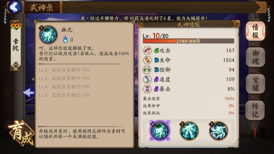
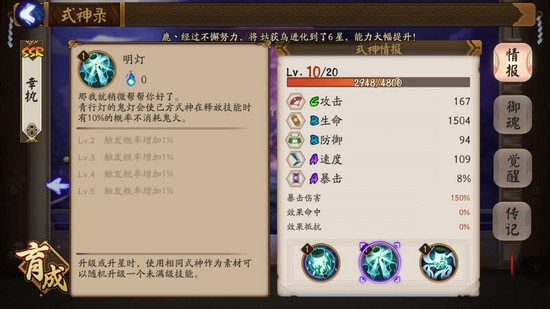
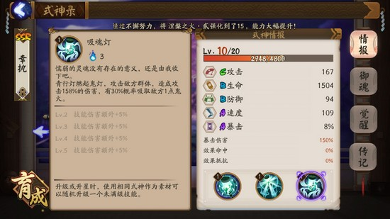
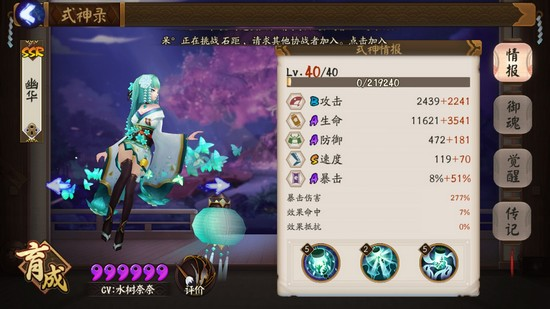
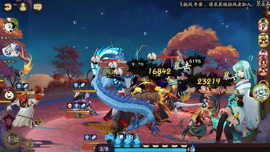
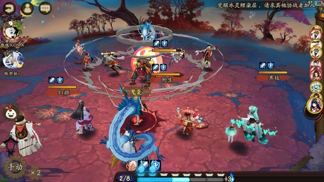
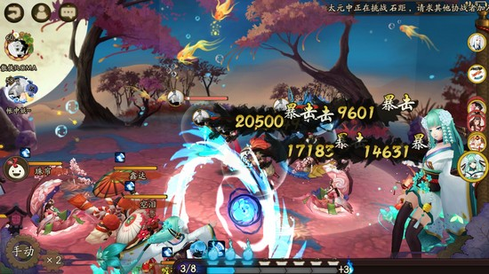
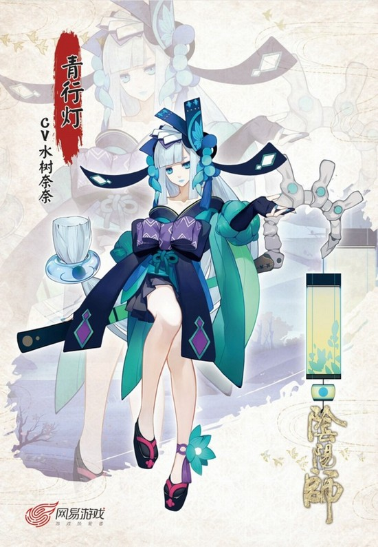

青行灯作为我心目中最美式神，是我当前主力式神之一。ssr的稀有度使得青行灯做不到人手一只，但是其独一无二的战斗机制让她始终在斗技场中有不俗的表现。满技能的青行灯需要12个黑蛋的加持，是一个难以养活的小姐姐，这也让她的出场率有些许逊色，但是小姐姐的表现和独有的能力是绝对不会让你的投资白费的。尽管大多数人都知道了，不过首先要做的还是看一下她的技能。
这个技能作为普通攻击，伤害方面没有亮点可寻，但是觉醒后能够有30%的概率吸收敌方一点鬼火，一下就是两点鬼火的优势差，使得它有很大的战术意义。
二号技能虽然触发概率并不高，但是有时候让你少消耗的三点鬼火能一举奠定胜利的基础。
大招吸魂灯，每攻击一个敌人就有30%概率吸收一点鬼火，是整个阴阳师里独一无二的存在，也是灯姐在斗技里活跃的最大保障。
让我们先从整体属性认识一下青行灯，楼下是本人渣灯……攻击B的面板是青行灯最大的软肋，即使大招追魂灯有着不俗的伤害比例，仍然让青行灯的输出不够强力，而极好的基础速度能对A的面板有些微的弥补。而大招一个单段的AOE技能，让青行灯可以肆无忌惮的追求爆伤而不需要像茨木荒川等纠结暴击概率，只要对主要目标打出一次暴击就有成效，这是青行灯的一大优势。尽管如此，较低的暴击概率仍然是灯姐绕不过去的坎。基于这一点，下面介绍一下青行灯的阵容及御魂搭配。
御魂种类推荐:破势，轮入道，狰。当前最主流的御魂搭配当然是破势，因为破势相比轮入道要更好获得，比起狰来泛用性要好的多，那我们就从以破势灯为核心打法的斗技阵容开始讲起。
①双拉双输出:最为粗暴的阵容，意味着能够粗暴解决掉战斗，这种情况下多把灯作为一号输出，破势灯先手能够很好的压住敌方血线，并且抢夺鬼火的概率最大，是对双拉双输出阵容鬼火不足这一短板的很好的弥补，甚至可以有意去搭配神乐进行两次攻击，给足对方鬼火上的限制，随后二号输出进行补刀，使敌方减员。二四六主属性推荐:攻击攻击爆伤。优点:速战速决;缺点:缺乏变通。
②般若雪女灯:当前斗技常用阵容之一，对于任何阵容都有优秀的压制作用，而在这个阵容里青行灯作为主要的输出使用破势是强化输出的重要手段。二四六主属性推荐:速度攻击爆伤。优点:泛用性广，容错率高。缺点:对于阵容内所有式神练度要求高，御魂要求更高，难以达到理论水平。
③反手阵容:基于酒吞容易被雨女樱花克制，吸血姬难以面对高爆发伤害的情况下，多用于做补充输出的作用，主要用于反手阵容内斗情况。反手阵容缺乏鬼火的劣势很容易被灯姐扩大，进而制造赛点。二四六主属性推荐:速度攻击爆伤。优点:不易被针对;缺点:难以造成致命性杀伤，同时因为反手阵容鬼火量通常不足，难以有奇效。
轮入道作为较难获取的御魂之一，意味着这个御魂有着一般阵容难以针对的特点，多一回合的御魂效果给灯的收益是巨大的，轮入道加持下的吸魂灯通常只有一费甚至无消耗，是我最为推荐的一种御魂搭配方式，下面就来详细说一下轮入道灯姐要如何搭配阵容。
①双拉双输出:同破势一样，起到的同是一个压血线的作用，但多一次行动机会意味着更多的输出，对手很难吃下如此多的伤害，但是不确定性让灯姐并不太适合这个阵容，不做主要推荐。二四六主属性推荐:攻击攻击爆伤。优点:有一波带走的机会;缺点:不确定性很大。
②般雪灯:这个阵容体系轮入道是最好的选择，灯本身并不突出的输出能力因为控制的存在有了次数上的弥补，而轮入道能让这种弥补变得极为强势，能够摧枯拉朽的毁灭对方。二四六主属性推荐:速度攻击爆伤。优点:极为切合阵容，有效杀伤，总有多次触发机会;缺点:比起破势灯的般雪灯阵容，御魂获取难度更大。
③反手阵容:多在较为强势的反手队伍中使用，经常作为配合另一输出的辅助输出使用。之前讲过的难以对同反手队鬼火造成有效限制的弊病因为多一次的行动机会有了弥补，配合主力输出能使对方有效减员。二四六主属性推荐:速度攻击爆伤。优点:能限制椒图等式神的发挥;缺点:运气不好己方有可能陷入鬼火不够的险境。
御魂狰作为反手阵容的特化推荐，主要是因为青行灯普通攻击30%概率吸火的诱人前景，不以吸魂灯作为输出手段，仅仅作为限制性式神使用。二四六主属性推荐①:攻击，抵抗，暴击。优点，能有效限制敌人并做出输出;缺点:有时效果不够理想二四六主属性推荐②:生命，抵抗，防御/生命。优点:能保证限制的持久性;缺点:缺乏输出。
总结:灯姐作为ssr式神其技能独特性绝对对得起ssr的稀有度，更何况灯姐那盛世美颜绝对是供养起来的不二人选，大家快快把她养成吧～
(以上攻略均为楼主摸索总结而成，一人看法难免失之偏颇，希望大家一起讨论或是前来指正，我先去舔灯姐美腿啦OVO)
